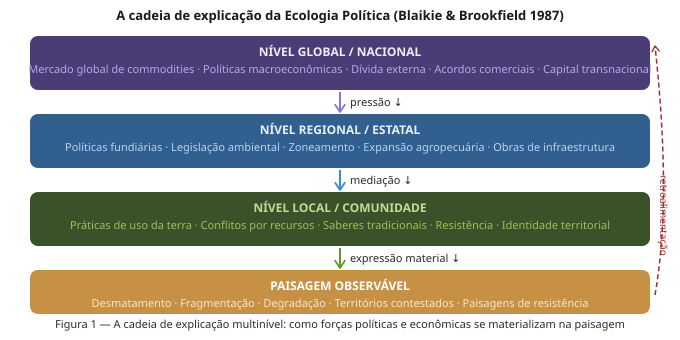

Ecologia Política
Conflitos de terra, poder e a construção social da paisagem — Semana 12 · BO-304
O que a Ecologia de Paisagens não pergunta — mas deveria
- Quem decidiu que a paisagem seria configurada assim?
- Em benefício de quem opera esse arranjo espacial?
- A que custo — e para quem — foi produzida esta paisagem?
- Quem foi excluído para que esta paisagem existisse?

O que é Ecologia Política?
Campo crítico e interdisciplinar que estuda a mudança ambiental e as lutas em torno dela, com foco em:
- Poder — quem controla os recursos e o espaço
- Marginalização — quem paga os custos da degradação
- Conflito — disputas sobre acesso, uso e significado do território
- Construção social — como o ambiente é produzido por relações sociais
Fundadores: Blaikie, Brookfield (1987) · Peet & Watts (1996) · Robbins (2004)
A cadeia de explicação
Blaikie & Brookfield (1987) — Land Degradation and Society:
Para entender a degradação ambiental, é preciso subir a cadeia de causas:
- Local: o agricultor derruba a floresta
- Regional: políticas de crédito favorecem monocultura
- Nacional: reforma agrária bloqueada, grilagem tolerada
- Global: demanda por soja, carne e commodities
A paisagem que medimos é a sedimentação histórica dessas cadeias causais
A paisagem como arena de poder
- Agronegócio — capital, tecnologia, lobbying legislativo
- Estado — regulação, licenciamento, omissão seletiva
- Povos e comunidades — direitos territoriais, saberes, resistência
- Conservação — ciência, ONGs, acordos internacionais
- Mineração e infraestrutura — licenças, financiamento público
- Mercado de terras — especulação fundiária, grilagem
A paisagem como arena de poder

Paisagem como construção social

Territórios em disputa no Brasil
- Terras Indígenas — 14% do território; pressão garimpeira; violências
- Territórios Quilombolas — 4,3% titulados (Censo 2022); violências
- Unidades de Conservação — ~17% do território; conflito com populações pré-existentes; paper parks
- Fronteira Agropecuária — MATOPIBA, Cerrado; grilagem; expulsão de posseiros; Arco do Desmatamento
Territórios em disputa no Brasil

Terras Indígenas: poder e conservação
- TIs homologadas têm menor taxa de desmatamento que qualquer outra categoria de proteção
- Menor desmatamento ocorre onde há maior pressão sobre os povos
- Proteção florestal e direitos indígenas são aliados estruturais, não rivais
Povos indígenas em TIs demarcadas protegem efetivamente ~1,1 milhão km² de floresta amazônica com custo fiscal muito inferior ao das UCs convencionais
Terras Indígenas: poder e conservação

Quilombolas e o neoextrativismo
- Comunidades no noroeste de MG, Maranhão e Bahia mantêm quintais agroflorestais com dezenas de espécies nativas
- Práticas de roça de coivara preservam mosaicos de vegetação em diferentes estágios sucessionais
- Resultam em paisagens com maior conectividade que áreas vizinhas privadas
Quilombolas e o neoextrativismo

Conservação fortaleza vs. socioambiental
“Fortress conservation” (conservação fortaleza):
- Modelo que expulsa populações
- Herança colonial
- Produz conflitos prolongados
A alternativa socioambiental:
- Reservas Extrativistas (RESEX)
- Áreas de Proteção Ambiental (APA)
- Gestão compartilhada com comunidades tradicionais
Conservação convivial
Paisagens de resistência
- Agroecologia / quintais: alta diversidade, espécies nativas, soberania alimentar
- Territórios quilombolas: manejo florestal comunitário, roças de coivara, cipós, medicinais
- RESEX: seringueiros e castanheiros — floresta em pé como modelo econômico
- Mapeamento participativo: “o mapa como arma” contra-cartografia como instrumento legal
Essas paisagens têm menor desmatamento, maior biodiversidade, maior conectividade e maior estoque de carbono — com menor custo social
Paisagens de resistência

O ecólogo como ator político
Ao publicar ciência, o ecólogo:
- Produz dados que podem justificar expulsão de comunidades
- Ou produz dados que fundamentam a defesa de territórios
- A neutralidade não é uma opção real — é uma posição política disfarçada
O ecólogo como ator político
Pluralismo epistemológico:
- O conhecimento ecológico tradicional contém informações que nenhuma série temporal de satélite captura
- Integrar saberes não é relativismo — é ampliar o campo do conhecimento válido
- A tendência de tratar conflitos como “problemas a resolver” é uma posição política
- Os conflitos são a estrutura de poder que produz a paisagem
O ecólogo como ator político
Nordeste e Caatinga: a Ecologia Política do semiárido
A paisagem da Caatinga não é natural:
- Séculos de latifúndio e concentração fundiária
- Comunidades manejam a Caatinga há gerações
- A paisagem é a materialização da estrutura agrária nordestina
Nordeste e Caatinga: a Ecologia Política do semiárido
- Expansão da carcinicultura sobre manguezais e apicuns
- Energia solar e eólica sobre campos nativos — “transição energética” sobre territórios tradicionais
- Adutoras e transposição do São Francisco: disputas sobre água como paisagem
- Quilombos do semiárido: invisibilidade histórica e pressão fundiária crescente
Nordeste e Caatinga: a Ecologia Política do semiárido

Síntese: cinco conclusões
1. Paisagens são resultado de relações de poder O padrão de fragmentação não é neutro — é o produto de decisões políticas e exclusões históricas
2. Diferentes atores constroem a mesma paisagem de formas distintas Sobre o mesmo espaço biofísico operam visões ecológicas, territoriais e do capital radicalmente distintas
3. Justiça territorial e conservação são aliadas TIs demarcadas: menor desmatamento, maior biodiversidade — e maior justiça social
4. Paisagens de resistência têm boas métricas ecológicas Agroecologia, extrativismo e manejo comunitário produzem paisagens ecologicamente superiores às da monocultura
5. A ecologia não é neutra A posição epistemológica importa — e a Ecologia Política convida à tomada de partido consciente e eticamente informada